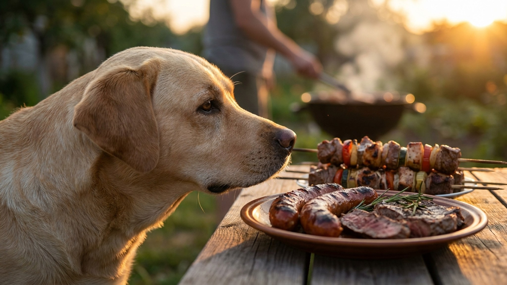

Каждое лето российские ветеринарные клиники фиксируют всплеск острых отравлений и хирургических случаев у собак — именно в шашлычный сезон. Куриная кость, брошенная «по-доброму», пробивает кишечник. Лук из маринада, незаметно попавший в миску, разрушает эритроциты. Жирный кусок свинины запускает панкреатит, из которого не все собаки выходят. Разбираем конкретику: что именно опасно, в каких дозах и что делать, если уже съел.
Главная иллюзия — что кость для собаки безопасна по умолчанию. Это не так. Опасность зависит от типа кости и способа приготовления.
Трубчатые кости (куриные ножки, крылья, рёбра, кости кролика) при разгрызании раскалываются на продольные осколки с острыми краями. Варёная кость раскалывается ещё легче, чем сырая — термическая обработка меняет структуру коллагена, кость становится хрупче. Осколок может застрять в глотке, пробить пищевод, желудок или кишечник. Прободение кишечника — хирургическая экстренная операция с летальностью 20-50% даже при своевременном вмешательстве.
Крупные мозговые кости (говяжьи, свиные) сами по себе реже ломаются на опасные осколки, но создают другой риск: собака может застрять нижней челюстью внутри кольцеобразной кости. Это паника, травма, экстренный вызов ветеринара.
Шампуры в мусоре — отдельная история. Собака вытаскивает шампур или металлическую шпажку, застрявшие кусочки мяса провоцируют её жевать металл. Зафиксированы случаи проглатывания деревянных шпажек длиной 15-20 см — это прямая кишечная непроходимость.
Что безопасно: крупные сырые говяжьи мозговые кости без острых краёв, под наблюдением, не дольше 15-20 минут. Но во время дачного застолья с детьми и суетой — контроль невозможен. Проще убрать кости вовсе.
Лук, чеснок, порей, шалот, а также лук-батун содержат органосульфидные соединения — N-пропил дисульфид и тиосульфаты. Они вызывают окислительное повреждение эритроцитов собаки, образование телец Хайнца в клетках крови и последующую гемолитическую анемию.
Токсические дозы:
Симптомы гемолитической анемии развиваются не сразу. Первые признаки — через 1-3 суток после поедания:
При подозрении — немедленно к ветеринару. Лечение: инфузионная терапия, в тяжёлых случаях переливание крови. Дома лечить невозможно.
Виноград и изюм вызывают острую почечную недостаточность у собак. Механизм до конца не изучен, но летальная доза непредсказуема — одни собаки съедают горсть и выживают, другие погибают от нескольких ягод. Нет «безопасного количества».
На летних дачных столах виноград появляется в салатах (особенно салат «Тиффани», фруктовые нарезки), изюм — в выпечке. Собака подбирает кусочек с земли — и к вечеру отказывается от воды, не может встать. Симптомы: рвота и диарея через 2-6 часов, затем апатия, боль в животе, анурия (нет мочи). Это экстренная ситуация.
Ксилит — сахарозаменитель, встречается в некоторых соусах для барбекю, кетчупах с пометкой «без сахара», жевательных резинках, десертах. Для собак ксилит смертельно опасен: вызывает молниеносное падение сахара крови и острую печёночную недостаточность. Доза 0,1 г на кг уже вызывает гипогликемию. Читайте состав соусов, которые оказываются рядом с собакой.
Свиная шея, рёбра, шашлык с жирными прослойками, кожа птицы — всё это нагрузка на поджелудочную железу, которую организм собаки не рассчитан переносить залпом. Острый панкреатит у собак развивается быстро: от поедания до первых симптомов — 2-6 часов.
Симптомы острого панкреатита:
Лечение — только стационарно: капельницы, голод, обезболивание, контроль ферментов. Тяжёлый панкреатит даёт смертность около 27-58%. Породы-риска: таксы, йоркширские терьеры, миниатюрные шнауцеры, кавалер-кинг-чарльз-спаниели.
Маринад для шашлыка — концентрат токсинов для собаки: лук, чеснок, соль, специи, уксус, иногда вино или пиво. Каждый компонент по отдельности уже проблема, вместе — удар по нескольким системам сразу.
Соль: острое натриевое отравление наступает при 4 г NaCl на кг массы. Маринад — солёный. Симптомы: жажда, рвота, неврологические нарушения, в тяжёлых случаях — судороги и смерть.
Алкоголь: собаки не имеют эффективных ферментных систем для расщепления этанола. Даже небольшое количество пива или вина вызывает вялость, нарушение координации, гипотермию, кому. Доза 5-8 мл 40% спирта на кг — смертельна.
Специи (острый перец, хмели-сунели, паприка в больших количествах) раздражают ЖКТ, вызывают диарею и рвоту. Самостоятельно не убивают, но усиливают эффект других токсинов.
Собаке на даче можно дать мясо — при соблюдении простых условий:
Алгоритм зависит от того, что и когда было съедено:
Телефоны держите заранее записанными: ближайшая ветклиника с круглосуточным приёмом, телефон доверия ветеринарной токсикологии. На даче — особенно важно знать адрес ближайшей клиники в районе.
Главная сложность — не знания хозяина, а гости. «Одну косточку можно», «я просто угощу», «он сам взял». Несколько практичных мер:
Шашлычный сезон начался. Пусть он будет безопасным — для всех членов семьи.